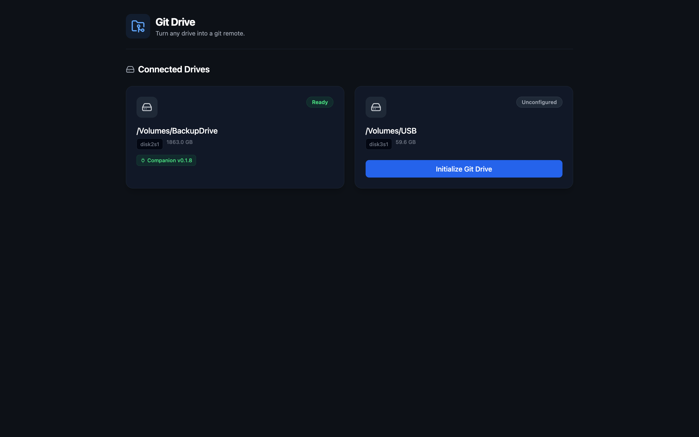
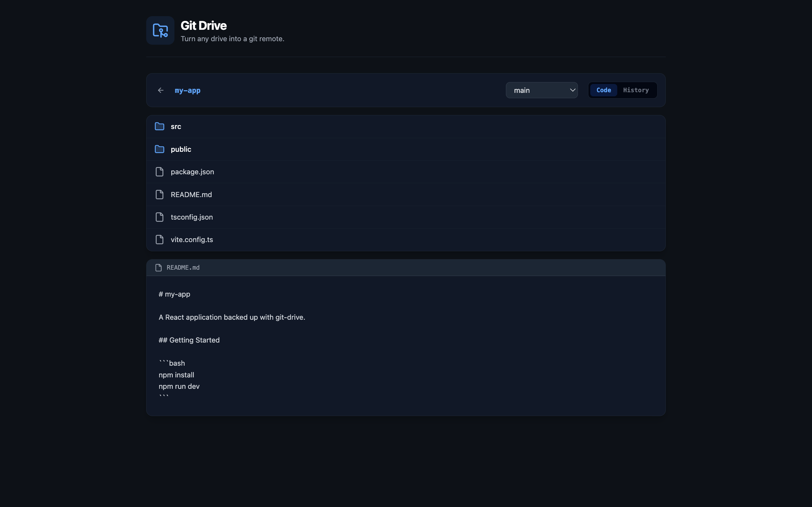
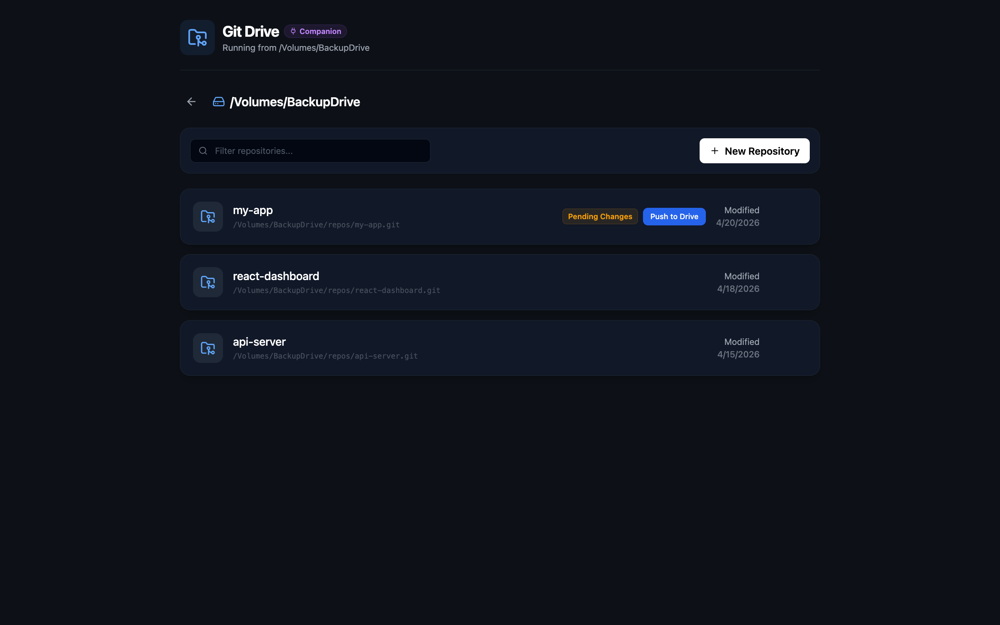

Offline Backups
No internet required. Backup directly to USB drives, external HDDs, or network storage.
Git-Drive transforms external storage volumes into git remote repositories. Backup your code offline, transport it physically, or keep complete control of your data.
Simple, reliable, offline-first code backup
No internet required. Backup directly to USB drives, external HDDs, or network storage.
Works with all git features—branches, tags, history. Your complete repo, preserved.
Beautiful dashboard to manage drives, view repos, and monitor backup status.
Handle multiple connected drives simultaneously. Backup to different destinations.
Run git-drive directly from the drive itself. Portable and self-contained.
Backup entire directories of repos with a single command. Bulk operations made easy.
npm install -g git-drive
git-drive init /Volumes/MyDrive
git-drive link && git-drive push
A clean, minimal dashboard to manage drives, repos, and backups



Choose your preferred package manager or run via Docker
npm install -g git-drivepnpm add -g git-driveyarn global add git-drive# Build the Docker image
docker compose build
# Run the container
docker compose up -d
# Use the CLI through Docker
docker compose run git-drive-cli After installation, verify git-drive is working:
git-drive --versionComplete reference for all git-drive CLI commands
init [path]
Initialize git-drive on an external drive. Prompts for drive selection if no path provided.
git-drive init /Volumes/MyDrivelink
Link current repo to a drive (interactive selection). Creates the repo in git-drive if it doesn't exist.
git-drive linkpush
Push current repo to the linked drive. Pushes all branches and tags.
git-drive pushlist
Show connected drives and their status. Lists all repos on each drive.
git-drive liststatus
Show detailed status of drives and repos. Includes sync status and last backup time.
git-drive statusserver
aliases: start, ui
Start the git-drive web UI server at http://localhost:4483
git-drive servercompanion [path]
Run git-drive from a drive (companion mode). Useful for portable usage.
git-drive companion /Volumes/MyDrivepush-all
Backup all repos in a directory to a drive. See the Push-All page for detailed options.
git-drive push-all ~/Developer/-v, --version
Show the installed version of git-drive.
git-drive --versionRun git-drive directly from your external drive
Companion mode allows you to run git-drive directly from an external drive, making it portable and self-contained. This is useful when:
When you run git-drive init on a drive, it automatically installs a companion copy of git-drive on that drive.
# Interactive selection - shows drives with git-drive initialized
git-drive companion
# Direct path - run companion mode from a specific drive
git-drive companion /Volumes/MyDriveFinds an available port (starting from 4484)
Starts the git-drive server in companion mode
Opens your browser to the web UI
Shows only the companion drive in the UI
Press Enter to stop the companion server.
The companion is stored on the drive itself
The companion can be updated from the web UI
Shows companion version and update availability
Automatically finds an available port if the default is in use
Backup all repositories in a directory with a single command
# Backup all repos in a directory
git-drive push-all ~/Developer/
# With options
git-drive push-all ~/Developer/ --drive /Volumes/MyUSB # Non-interactive drive selection
git-drive push-all ~/Developer/ --init-all # Initialize non-git directories as repos
git-drive push-all ~/Developer/ --skip-non-git # Skip non-git directories
git-drive push-all ~/Developer/ --force # Override existing drive linksScans directory for git repositories and non-git projects
Offers to initialize non-git projects as git repos before backing up
Pushes all branches and tags for each repository
Automatically links each repo to the selected drive
Shows real-time progress and summary
| Flag | Description |
|---|---|
--drive |
Specify the target drive (non-interactive) |
--init-all |
Automatically initialize all non-git projects |
--skip-non-git |
Skip non-git directories without prompting |
--force |
Re-link repos that are already linked to a different drive |
Contributing to git-drive
# Clone the repository
git clone https://github.com/josmanvis/git-drive.git
cd git-drive
# Install dependencies
pnpm install
# Build all packages
pnpm build
# Run in development mode
pnpm devThe project uses GitHub Actions for automated publishing to npm. To publish a new version:
packages/cli/package.jsonMake sure to set the NPM_TOKEN secret in your GitHub repository settings.
Git-drive creates a .git-drive/ directory on the target drive where it stores bare git repositories. The CLI communicates with a local server that manages drive connections and repository operations.
When you run git-drive link, it:
The CLI automatically starts the git-drive server in the background when needed, so commands like link, push, list, and status work immediately without manually starting the server first.
MIT License - see LICENSE for details.